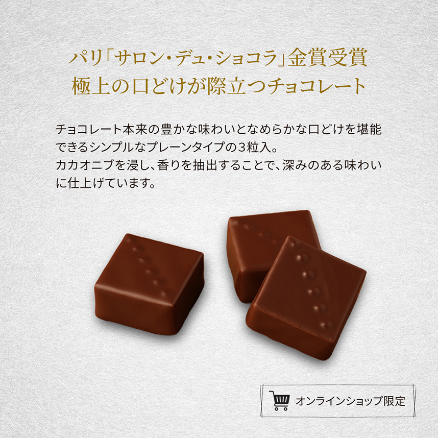
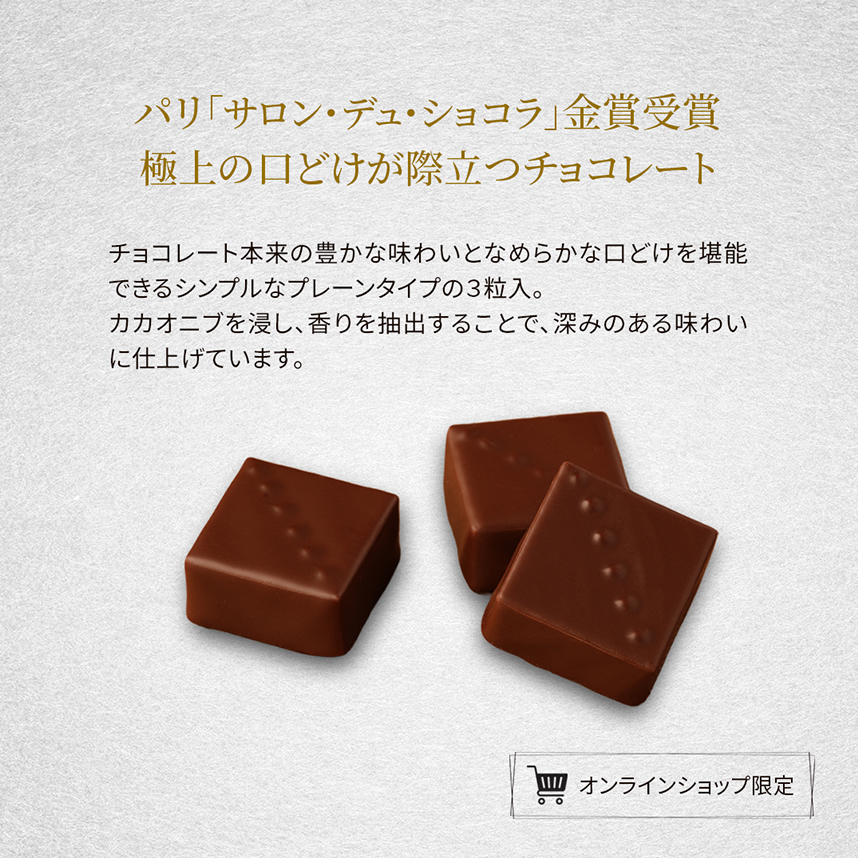
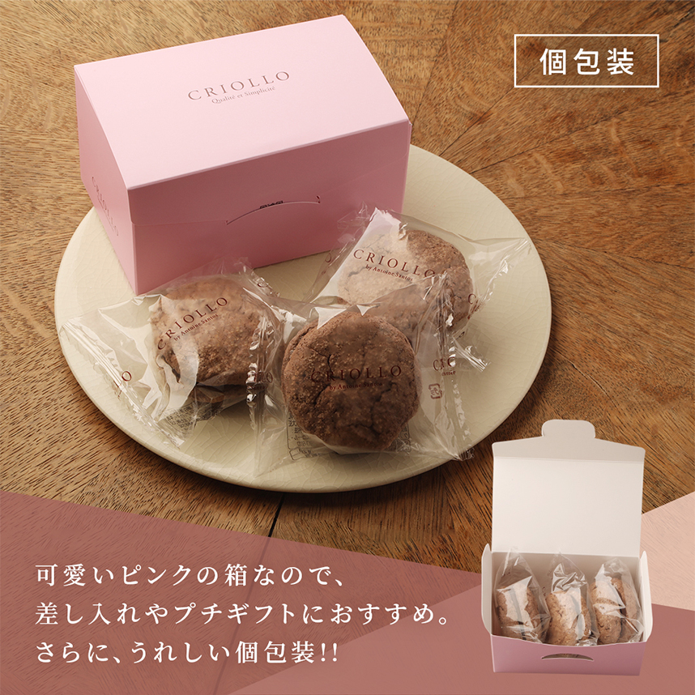
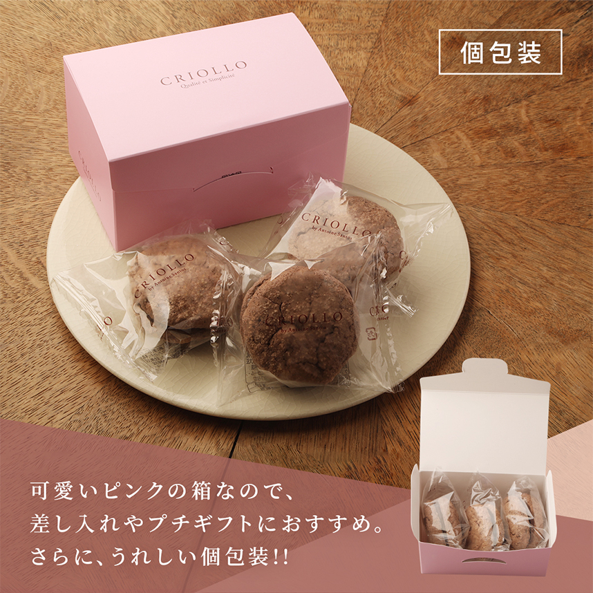

Profile 自己紹介
後藤 麻紀
広告代理店や人材紹介会社で、広告制作やWebコンテンツの運用・更新を中心に経験を積んできました。
新卒で入社した広告代理店では、広告管理業務を経てクリエイティブチームに所属し、 広告制作や自社コンテンツの運用・更新作業を担当。 その後、人材紹介会社ではWebコンテンツの運用をメインに、 イベント用のポスターや冊子などの制作にも携わりました。
その後、結婚・出産を経て、現在は洋菓子店でパート勤務中。
ECサイトの商品画像やLPの作成、サイトの改修などを担当しています。
家庭との両立を大切にしながら、派遣・パートという働き方で、 Webデザインや日々の更新・運用を通して貢献していきたいと考えています。
Portfolio作品集

 

 
